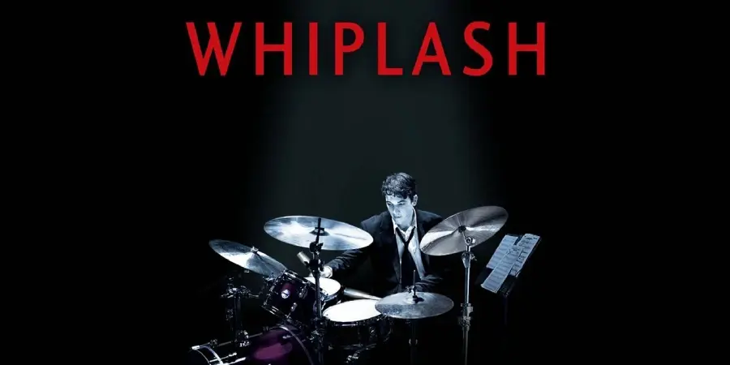

Whiplash

Movie length: 1hr 47min
What's Captiving About The Movie:
The moment you sit down and watch this movie, you begin to feel chills run down your spine. From the opening scene to the final scene, there is this tension and on edge feeling that is very easily caught and thrown to the audience. Everything in this film is captivating; there are scenes where it feels as if the audience is there in the movie. Everything in this film is captivating; there are scenes where it feels as if you could be there in the room with the characters, feeling exactly what they feel and experiencing what they experience. Through its use of body language, color, and music, Whiplash becomes a genuine masterpiece that ties every element of the film together. It gives the movie, its characters, and its scenes an emotional depth that the audience can truly feel and connect with through the screen.
Plot:
The 2014 film "Whiplash" is an indie drama but can be seen as a psychological drama. It tells the story of 19 year-old Andrew Neinman who is a first-year jazz student at Shaffer Conservatory of Music. Andrew has a dream and passion to become a famous jazz drummer. One of the problems is that there are two bands in the school, band A (known as the studio band) and band B (known as the second tier band). Andrew, unfortunately, is in band B, where he isn't even the main drummer. This causes him to push himself day after day to be the best.
One day while practicing he meets the director of band A, Terence Fletcher. From the moment that Fletcher is on screen, you can feel and sense how serious and how imitating he is. Andrew and Fletcher have a small interaction which leaves Andrew wanting to do better and work harder. Both of them later have another interaction which results in Andrew being invited into band A. This leads Andrew facing a new set of problems that comes with having a passion and a drive for what he wants.
Why You Should Watch:
This is a truly eye-opening film that many viewers consider unforgettable. The pacing and storyline are deeply engaging, especially considering that the story is inspired by one of the director's real-life experiences. There are multiple elements in the find that attract viewers such as the cinematography, soundtrack, the thrilling feeling and complex narrative. This film captures not only the highs of passion and ambition, but also the lows that come with always wanting more. It is captured in such a way that makes the viewer deeply think about their own passions and hopes.
If You Like This, You Should Try:
If "Whiplash" catches your attention, there are many other films that leave the audience with a similar feeling, such as: "Sound of Metal", "Good Will Hunting" or "Dead Poets Society."
Cast & Crew:
Staring: Miles Teller, J. K. Simmons & Paul Reiser
Filed under Drama